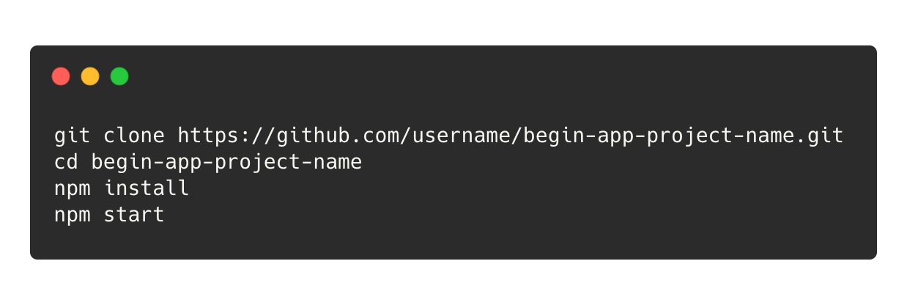
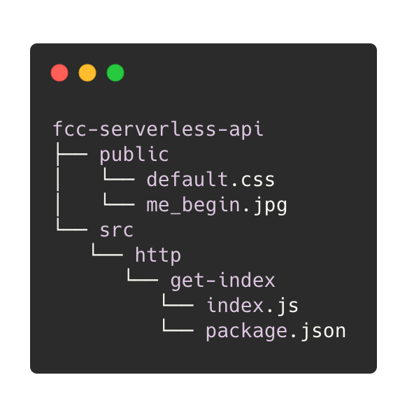
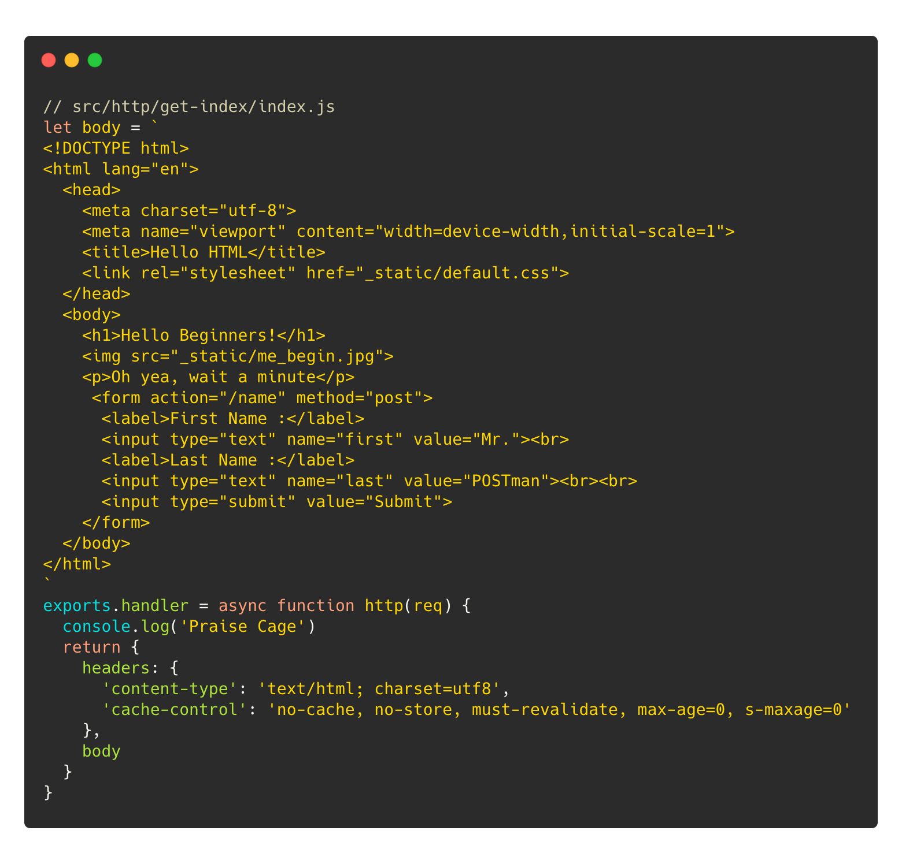
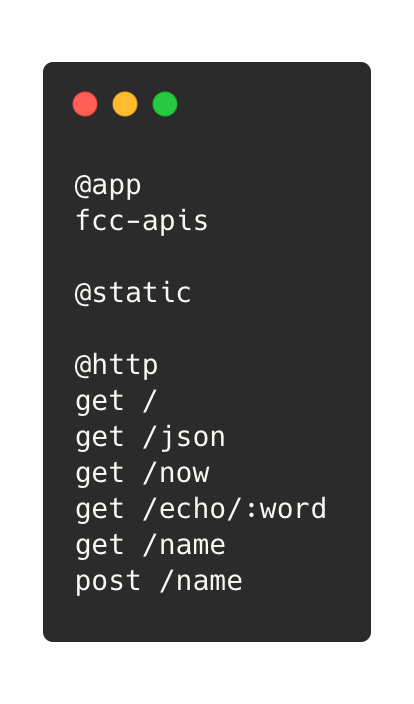
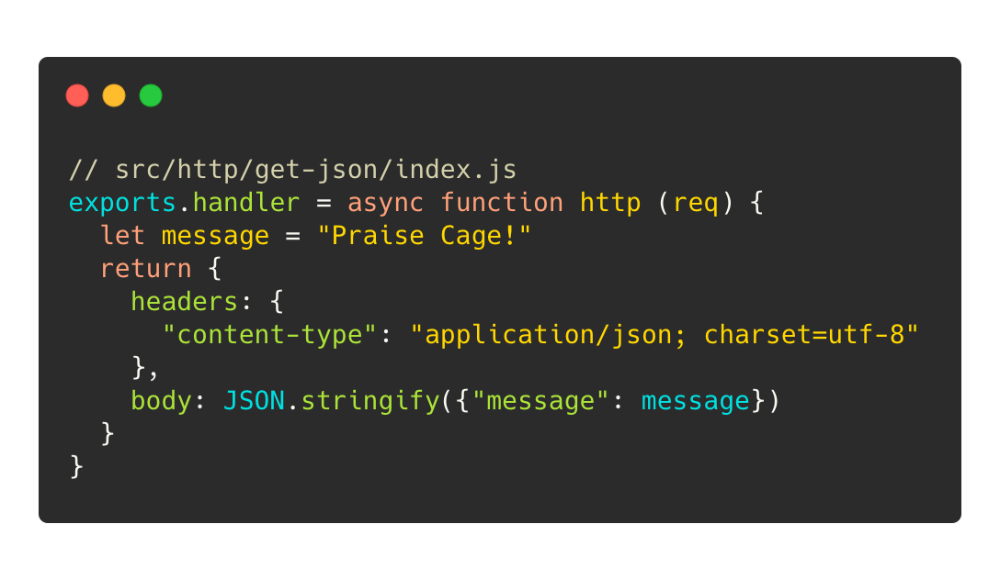
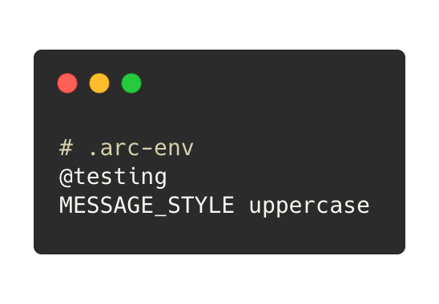
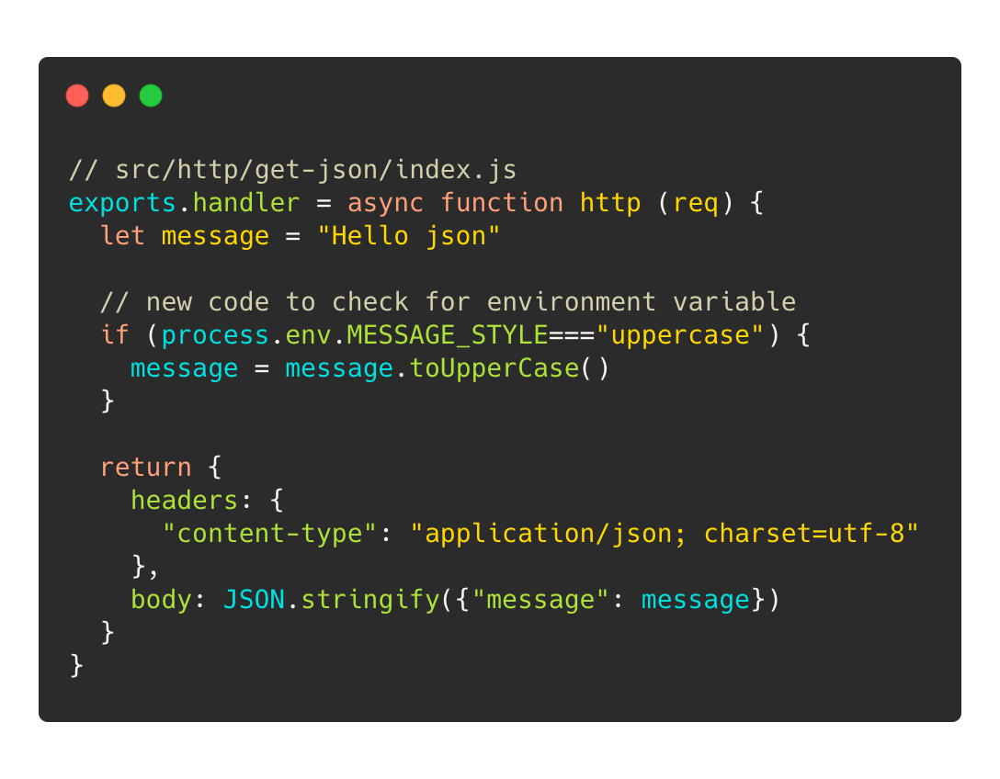
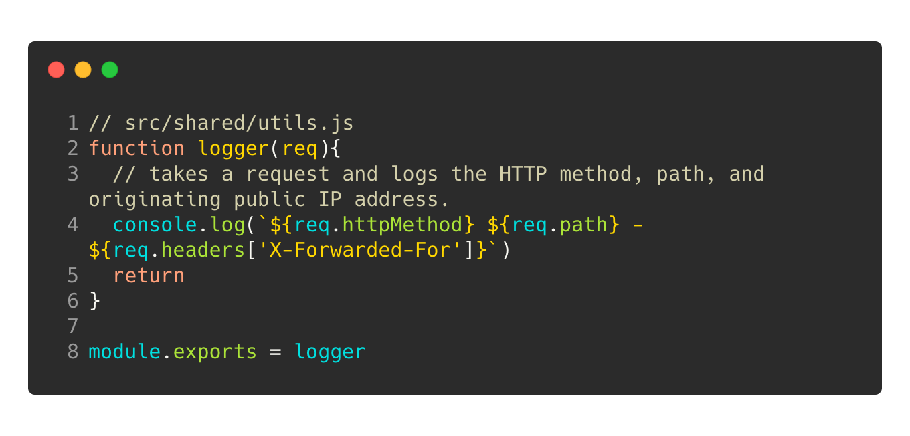
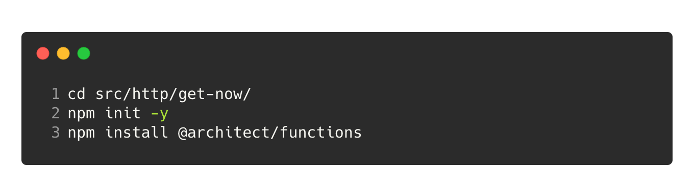
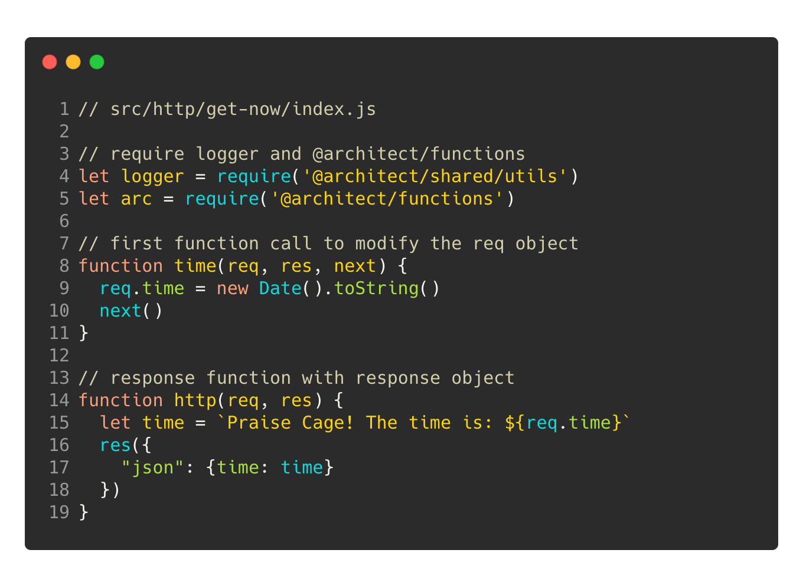

Begin ❤️ Serverless
Paul Chin Jr.
Head of Developer Relations @begin
Let's hug our
servers.
What is a web server?
I don't know really
It listens for web requests and sends web responses
Let's get set up
 Requirements: A GitHub Account and Node.js
Requirements: A GitHub Account and Node.js
Take a peek inside

Project structure 
Function logs
console.log('all the things!')

Infrastructure as Code
$ cat app.arc

JSON Intermission
Grab a drink of water
Ready to serve some JSON?
{"message":"Praise Cage!"}

Save the environment variables
Don't commit this to .git 

Middleware and shared code

Runtime helper functions
npm i @architect/functions
Self-contained deps 
Middlware time 
Can I get a #praisecage!?
GET /echo/praisecage
A query for your thoughts?
GET /name?first=nic&last=cage
POST it
POST /name
IaC Review
$ cat app.arc
JSON Intermission
Resources and Review
- https://github.com/pchinjr/fcc-serverless-api
- https://Begin.com
- https://learn.begin.com
- @paulchinjr
Live API Build
begin.com